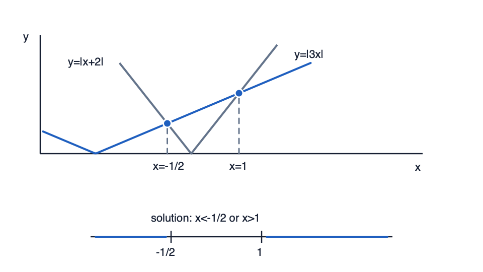

You need the remainder when f(x)=x3−4x+1 is divided by x−2. Long division works, but there is a faster test.
Set the divisor equal to zero first. What value of x should be substituted into f(x)?
Not completed
Try a similar checked question
For divisor x+3, what value should be substituted?
Exam transfer
Exam transfer: when a question asks only for a remainder, produce the divisor root and substitute it into the polynomial. The common trap is doing full division or using the wrong sign for the root.
Step 2 of 17
Factor theorem need
You need to decide whether x−2 is a factor of f(x)=x3−4x2+x+6.
Check the factor condition. What is f(2)?
Not completed
Try a similar checked question
For g(x)=x3+x2−5x+3, find g(1) to check whether x−1 is a factor.
Exam transfer
Exam transfer: factor-theorem questions usually want a clear f(a)=0 check before any full factorisation. Write the substitution line so the zero remainder is visible.
Step 3 of 17
Use a known factor to factorise a cubic
You have confirmed that x−2 is a factor of x3−3x2−4x+12. The next need is the remaining quadratic.
After dividing by x−2, what quadratic remains?
Not completed
Try a similar checked question
Given x+1 is a factor of x3+2x2−5x−6, what quadratic remains?
Exam transfer
Exam transfer: for a cubic with one known factor, show the division step, then solve the remaining quadratic for the other roots.
Step 4 of 17
Polynomial division when substitution is not enough
You need the quotient as well as the remainder when 2x3−x2+5x+7 is divided by 2x+1. The remainder theorem alone is not enough.
Divide once. What is the first term of the quotient?
Not completed
Try a similar checked question
For (6x3+x2−4)÷(3x−1), what is the first quotient term?
Exam transfer
Exam transfer: when the question asks for quotient and remainder, use long division and keep subtracting until the remainder degree is lower than the divisor degree.
Step 5 of 17
Complete a cubic factorisation
You know x−2 is a factor of x3−3x2−4x+12. Now complete the routine rather than stopping at the first division step.
Find all three roots of x3−3x2−4x+12=0.
Not completed
Try a similar checked question
Find all roots of x3+2x2−5x−6=0, given x+1 is a factor.
Exam transfer
Exam transfer: cubic factorisation marks often require the known factor, the quotient, and the final roots, not only the factor-theorem check.
Step 6 of 17
Quartic division by a quadratic divisor
A harder division can have a quartic dividend and a quadratic divisor. The same leading-term routine still works.
Divide x4+2x3−3x2+4x−4 by x2+2x−1. What quotient is produced?
Not completed
Try a similar checked question
For the same division, type the remainder.
Exam transfer
Exam transfer: quartic division is not a new method. Keep missing powers and subtraction signs visible, then state both quotient and remainder.
Step 7 of 17
Non-monic factors and unknown coefficients
The divisor 2x−3 is not monic, so the theorem input is the value that makes 2x−3=0, not 3 or −3.
For f(x)=4x3+ax+b, use factor and remainder conditions to find a and b.
Not completed
Try a similar checked question
For f(x)=4x3+ax+b, 2x−3 is a factor and the remainder on division by x+1 is 10. Find a and b.
Exam transfer
Exam transfer: unknown-coefficient questions convert each factor or remainder condition into one equation, then solve the simultaneous equations.
Step 8 of 17
Sketch y = |ax + b|
The graph y=∣2x−3∣ is formed by reflecting the negative part of y=2x−3 above the x-axis.
Diagram

Modulus equation vs inequalityEquation points sit at the intersections; the less-than inequality is the interval between them.
Key move: split |x-a|=b into two cases, then use the graph to choose inside or outside intervals.
Where is the vertex of y=∣2x−3∣?
Not completed
Try a similar checked question
Find the vertex of y=∣3x+6∣.
Exam transfer
Exam transfer: modulus graph sketches need the zero of the inside expression, the V-shape, and the reflected branch.
Step 9 of 17
Solve absolute value equations
The equation ∣2x−3∣=5 asks where the distance of 2x−3 from zero is 5.
Diagram
Modulus equation vs inequalityEquation points sit at the intersections; the less-than inequality is the interval between them.
Key move: split |x-a|=b into two cases, then use the graph to choose inside or outside intervals.
Split into two cases and solve.
Not completed
Try a similar checked question
Solve ∣x+4∣=3.
Exam transfer
Exam transfer: a modulus equation normally needs both positive and negative cases unless the right side is negative, which gives no solution.
Step 10 of 17
Solve |x - a| < b inequalities
The inequality ∣x−2∣<5 says x is less than 5 units from 2 on the number line.
Diagram
Modulus equation vs inequalityEquation points sit at the intersections; the less-than inequality is the interval between them.
Key move: split |x-a|=b into two cases, then use the graph to choose inside or outside intervals.
Write the solution interval.
Not completed
Try a similar checked question
Solve ∣x+1∣<4.
Exam transfer
Exam transfer: for less-than modulus inequalities, keep the interval between the boundary points; for greater-than, use the outside intervals.
Step 11 of 17
Interpret modulus intervals from a graph
On the graph of y=∣2x−3∣, the horizontal line y=5 meets the V-shape at x=−1 and x=4.
Diagram
Modulus equation vs inequalityEquation points sit at the intersections; the less-than inequality is the interval between them.
Key move: split |x-a|=b into two cases, then use the graph to choose inside or outside intervals.
Where is ∣2x−3∣<5?
Not completed
Try a similar checked question
Given intersections at x=−2 and x=6, where is a modulus graph above the horizontal line?
Exam transfer
Exam transfer: graphical modulus inequalities depend on reading above or below the comparison graph, then translating the x-intervals correctly.
Step 12 of 17
Partial fractions: distinct linear factors
Before finding constants in (x−2)(x+1)x+3, choose the decomposition form.
Which partial-fraction form is correct?
Not completed
Try a similar checked question
Choose the form for (x−3)(x+4)2x+1.
Exam transfer
Exam transfer: in a partial-fractions question, choosing the correct form is the first mark-bearing move before clearing denominators.
Step 13 of 17
Partial fractions: repeated linear factor
The denominator x(x−1)2 has one single linear factor and one repeated linear factor.
What terms are needed for the repeated factor (x−1)2?
Not completed
Try a similar checked question
Choose the form for (x+2)2(x−1)1.
Exam transfer
Exam transfer: repeated-factor omissions are common; write all powers first, then solve constants.
Step 14 of 17
Partial fractions: irreducible quadratic factor
The denominator (x+1)(x2+2) includes an irreducible quadratic factor.
What numerator form belongs above x2+2?
Not completed
Try a similar checked question
Choose the form for (x−3)(x2+4)x+5.
Exam transfer
Exam transfer: for mixed linear-quadratic denominators, use a constant numerator over the linear factor and a linear numerator over the quadratic factor.
Step 15 of 17
Binomial expansion: fractional or negative powers
You need the first three terms of (1−2x)−2 without multiplying out an infinite series.
Write the first three terms of the expansion.
Not completed
Try a similar checked question
Write the first three terms of (1+3x)−1.
Exam transfer
Exam transfer: identify u and n first, then build only the requested powers of x.
Step 16 of 17
Binomial validity condition
The expansion of (1+3x)−2 is not valid for every x.
What inequality must be true for the expansion to be valid?
Not completed
Try a similar checked question
State the interval of validity for (1−2x)−2.
Exam transfer
Exam transfer: validity is tied to the bracket variable part, not to the exponent or the whole expression after expansion.
Step 17 of 17
Mixed exam transfer: cancellation trap
A simplification step gives x−3(x−3)(x+2). The expression can simplify, but one value must remain excluded.
Which value of x is lost if you cancel without stating the restriction?
Not completed
Try a similar checked question
For x−1x2−1, which value must remain excluded after simplifying?
Exam transfer
Exam transfer: in mixed algebra questions, write restrictions before cancelling factors, especially before using a simplified expression in a later binomial or partial-fraction step.
After this lesson
Learn is optional. When you are ready for checked evidence, move to the separate Checked Practice page.
A clean Checked Practice pass is the strongest local evidence.